Show how the data are loaded
library(tidyverse)
smartmix_obs <- read_csv("https://raw.githubusercontent.com/wu-rds/MA2026/main/data/smartmix_obs.csv")Driving question: What if we cannot randomize?
Experiments are the gold standard for causal questions — but most marketing data were never collected in an experiment. Customers choose which features they use, which channels they buy through, and which ads they click. Companies set prices and budgets in response to the market, not by coin flip. This chapter is about learning from such observational data: how far regression analysis can take us toward causal answers, where it stops, and what it is good for even when it cannot deliver causal conclusions. After working through this chapter you will be able to:
The chapter continues the story of the streaming service from Chapters 3 and 4. Session 5 covers Section 5.1 to Section 5.6; session 6 covers Section 5.7 to Section 5.11.
In Chapter 4, the streaming service tested Smart Mix in an A/B test with 400 users and found an increase in listening time of about 3 hours per month. Now imagine a different history: the company skipped the experiment and simply launched Smart Mix as an opt-in feature. Every user could switch it on. After four weeks, the analytics team pulls the data of 2,000 users: 653 of them adopted Smart Mix, 1347 did not.
library(tidyverse)
smartmix_obs <- read_csv("https://raw.githubusercontent.com/wu-rds/MA2026/main/data/smartmix_obs.csv")| Variable | Description |
|---|---|
smart_mix |
1 if the user switched Smart Mix on, 0 otherwise |
hours |
Listening hours in the four weeks after the launch |
prior_hours |
Listening hours in the month before the launch |
tenure |
Months since the user signed up |
premium |
1 for Premium subscribers, 0 for free users |
device |
Main device: iOS, Android, or Desktop |
age |
Age in years |
churn |
1 if the user cancelled within three months after the launch |
The comparison the dashboard shows is dramatic (Figure 5.1): adopters listened 9.3 hours more than non-adopters — three times the effect found in the experiment.
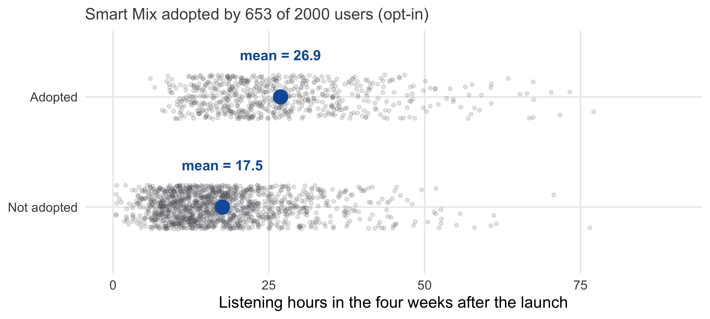
You know from Chapter 1 what to suspect. Nobody assigned Smart Mix by coin flip; users chose it — and the users who switch on a new music feature are not a random sample of all users. Figure 5.2 confirms the suspicion with data: adopters already listened 6.7 hours more before Smart Mix existed.
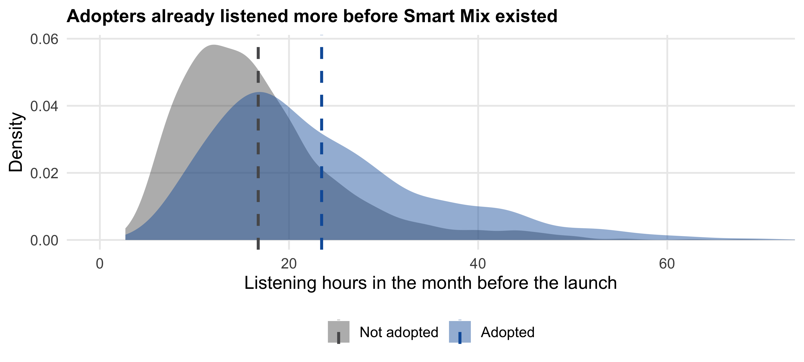
The situation is the one from Figure 1.6, in a new costume (Figure 5.3): an unobserved variable — call it music enthusiasm — drives both the decision to adopt Smart Mix and the listening time. The naive comparison mixes the effect of Smart Mix with the effect of enthusiasm.
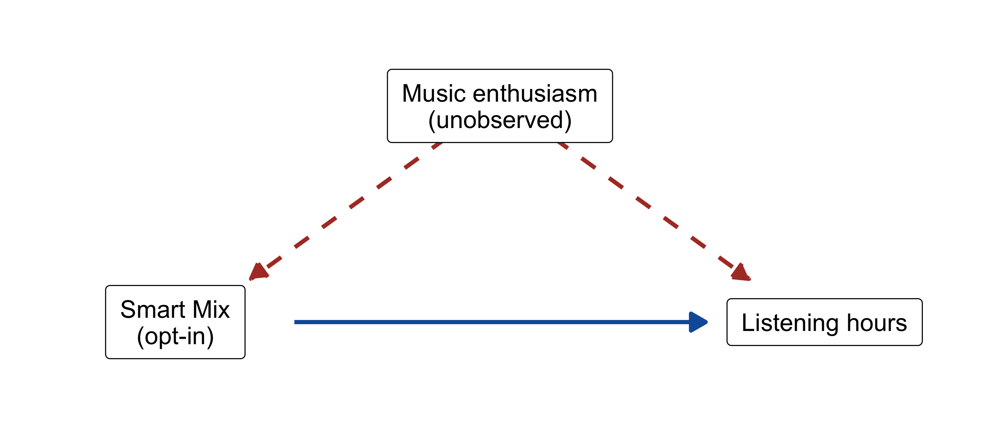
In an experiment, randomization cuts the dashed arrows. Without an experiment, we have one tool left: adjustment. If we can measure the variables that drive adoption — or good proxies for them — we can compare adopters and non-adopters who are alike on these variables, and isolate what is left. The tool for doing this is regression analysis, and the rest of the chapter develops it: first as a way of describing relationships (Section 5.2 and Section 5.3), then as a way of adjusting (Section 5.4), and finally with an honest look at what it cannot do.
Regression starts with a question you can answer by looking: how does one variable change with another? Figure 5.4 plots listening hours after the launch against listening hours before it. The cloud slopes upward: users who listened a lot before also listen a lot now. The correlation coefficient \(r\) = 0.64 summarizes this in one number between −1 and +1: the sign gives the direction, the size the strength of the linear association (you met it in Chapter 1, where it showed what correlation cannot tell you).
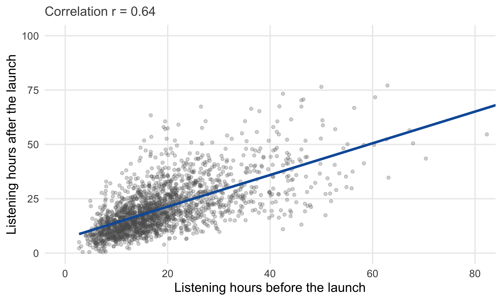
A correlation says that the variables move together; the regression line says how much. It describes the average listening time after the launch as a straight-line function of the listening time before:
\[ \text{hours} = \beta_0 + \beta_1 \times \text{prior hours} + \varepsilon \]
\(\beta_0\) is the intercept (the predicted value when the predictor is zero), \(\beta_1\) the slope (by how much the outcome changes when the predictor increases by one unit), and \(\varepsilon\) the residual — everything the line does not explain about an individual user. In R:
coef(lm(hours ~ prior_hours, data = smartmix_obs))(Intercept) prior_hours
6.7849 0.7291 Every additional hour of listening before the launch goes with 0.73 additional hours after it. Note the wording: goes with, not causes. The line describes the association in the data, nothing more.
Many lines could run through a cloud of points. The regression line is the one that makes the sum of the squared residuals — the squared vertical distances between the points and the line — as small as possible (Figure 5.5). Squaring makes large misses count much more than small ones and treats misses above and below the line alike. This is the method of least squares, and it is what lm() (“linear model”) computes.
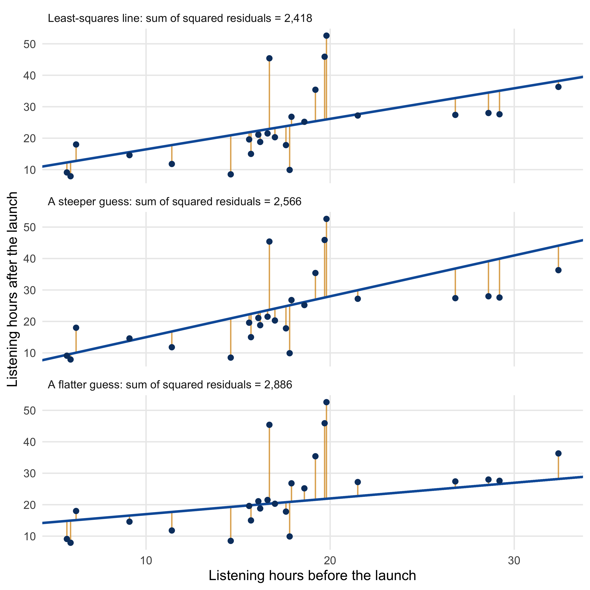
The covariance measures how two variables vary together: the average product of their deviations from their means, \(\text{cov}(x, y) = \frac{1}{n-1} \sum (x_i - \bar{x})(y_i - \bar{y})\). Its size depends on the units of \(x\) and \(y\); the correlation removes the units by dividing by both standard deviations: \(r = \text{cov}(x, y) / (s_x s_y)\), so that \(r\) always lies between −1 and +1.
The least-squares slope is the covariance divided by the variance of the predictor, \(\hat{\beta}_1 = \text{cov}(x, y) / s_x^2 = r \cdot s_y / s_x\), and the intercept makes the line pass through the point of means: \(\hat{\beta}_0 = \bar{y} - \hat{\beta}_1 \bar{x}\). Correlation and regression slope therefore carry the same information about the direction of the association; the slope adds the units (“hours per hour”), the correlation adds comparability across variables.
The complete output of lm() contains more than the two coefficients. Let us read it for the simplest version of the Smart Mix question — a regression of listening hours on the adoption dummy:
model_naive <- lm(hours ~ smart_mix, data = smartmix_obs)
summary(model_naive)
Call:
lm(formula = hours ~ smart_mix, data = smartmix_obs)
Residuals:
Min 1Q Median 3Q Max
-20.88 -7.64 -2.06 4.76 101.22
Coefficients:
Estimate Std. Error t value Pr(>|t|)
(Intercept) 17.541 0.300 58.5 <2e-16 ***
smart_mix 9.341 0.525 17.8 <2e-16 ***
---
Signif. codes: 0 '***' 0.001 '**' 0.01 '*' 0.05 '.' 0.1 ' ' 1
Residual standard error: 11 on 1998 degrees of freedom
Multiple R-squared: 0.137, Adjusted R-squared: 0.136
F-statistic: 316 on 1 and 1998 DF, p-value: <2e-16Table 5.2 walks through the parts that matter.
lm()
| Output | Meaning |
|---|---|
Estimate |
The coefficients: the intercept (17.54) is the mean listening time of non-adopters; the coefficient of smart_mix (9.34) is the difference between adopters and non-adopters |
Std. Error |
The standard error of each coefficient — its uncertainty, exactly as in Chapter 3 |
t value, Pr(>|t|) |
The t-test of each coefficient against zero and its p-value — the same test as in Chapter 4 (signal divided by noise) |
Residual standard error |
The typical size of a residual: how far individual users are from the line, in hours |
Multiple R-squared |
The share of the variation in the outcome that the model explains — here 14% |
F-statistic |
A test of the whole model against a model with no predictors (relevant with several predictors) |
Two observations connect this to what you already know. First, with a single 0/1 predictor, the regression is the comparison of two means: the coefficient of smart_mix equals the difference in means from Figure 5.1, and its t-test is the two-sample t-test of Chapter 4 (assuming equal variances). Second, the confidence interval of a coefficient is built as always — estimate ± about 2 standard errors — and R gives it with confint():
confint(model_naive) 2.5 % 97.5 %
(Intercept) 16.953 18.13
smart_mix 8.311 10.37R’s output shows p-values in scientific notation when they are very small. For reporting, journals round estimates and write small p-values as “< 0.001”. The small helper coef_table() — defined in the R script of this chapter — does this, and we use it for the coefficient tables from here on:
coef_table <- function(model, digits = 3) {
tab <- coef(summary(model))
out <- data.frame(
Estimate = round(tab[, 1], digits),
`Std. Error` = round(tab[, 2], digits),
statistic = round(tab[, 3], 2),
`p-value` = ifelse(tab[, 4] < 0.001, "< 0.001", sprintf("%.3f", tab[, 4])),
check.names = FALSE
)
names(out)[3] <- colnames(tab)[3]
rownames(out) <- rownames(tab)
out
}
coef_table(model_naive) Estimate Std. Error t value p-value
(Intercept) 17.541 0.300 58.45 < 0.001
smart_mix 9.341 0.525 17.79 < 0.001R² compares the residuals of the model with the residuals of the most basic model, which predicts the mean for everybody: \(R^2 = 1 - \text{SS}_\text{residual} / \text{SS}_\text{total}\). A value of 0.14 means that the model’s predictions are 14% “better” (in squared error) than simply guessing the mean. R² never decreases when you add a predictor, even a useless one; the adjusted R² reported next to it includes a small penalty for each predictor and is the better number for comparing models with different numbers of predictors.
The F-test asks whether the model as a whole explains more than chance — the same logic as the ANOVA in Chapter 4: variation explained by the model per degree of freedom, divided by unexplained variation per degree of freedom. With one predictor, it is equivalent to the t-test of that predictor.
Standardized coefficients express each effect in standard deviations (“one SD more prior listening goes with 0.6 SD more listening now”). They make coefficients of variables with different units comparable in size. You get them by standardizing the variables before the regression, e.g., lm(scale(hours) ~ scale(prior_hours), data = smartmix_obs).
The naive regression tells us how adopters and non-adopters differ. To ask how they would differ if they had the same listening history, we add that history to the model. A multiple regression fits a line — more precisely, a plane — through several predictors at once:
\[ \text{hours} = \beta_0 + \beta_1 \times \text{smart mix} + \beta_2 \times \text{prior hours} + \varepsilon \]
model_prior <- lm(hours ~ smart_mix + prior_hours, data = smartmix_obs)
summary(model_prior)
Call:
lm(formula = hours ~ smart_mix + prior_hours, data = smartmix_obs)
Residuals:
Min 1Q Median 3Q Max
-29.98 -5.52 -1.38 4.15 90.19
Coefficients:
Estimate Std. Error t value Pr(>|t|)
(Intercept) 6.451 0.412 15.7 <2e-16 ***
smart_mix 4.901 0.443 11.1 <2e-16 ***
prior_hours 0.662 0.020 33.2 <2e-16 ***
---
Signif. codes: 0 '***' 0.001 '**' 0.01 '*' 0.05 '.' 0.1 ' ' 1
Residual standard error: 8.85 on 1997 degrees of freedom
Multiple R-squared: 0.443, Adjusted R-squared: 0.443
F-statistic: 795 on 2 and 1997 DF, p-value: <2e-16The coefficient of smart_mix has dropped from 9.3 to 4.9 hours. Its interpretation has changed too: it is now the difference between adopters and non-adopters with the same prior listening time — the effect of Smart Mix “holding prior listening constant”. This is what adjustment means: the regression compares like with like, at least with respect to the variables in the model. Because adopters listened more before the launch, and prior listening predicts current listening, part of the naive difference was due to prior listening — and that part is now attributed to prior_hours instead of to Smart Mix.
The same logic extends to more variables. Each coefficient in a multiple regression is the association between its variable and the outcome holding all other variables in the model constant:
model_full <- lm(hours ~ smart_mix + prior_hours + tenure + premium + device, data = smartmix_obs)
summary(model_full)
Call:
lm(formula = hours ~ smart_mix + prior_hours + tenure + premium +
device, data = smartmix_obs)
Residuals:
Min 1Q Median 3Q Max
-30.38 -5.21 -1.26 4.10 90.22
Coefficients:
Estimate Std. Error t value Pr(>|t|)
(Intercept) 6.2547 0.5404 11.58 < 2e-16 ***
smart_mix 4.4724 0.4375 10.22 < 2e-16 ***
prior_hours 0.6126 0.0206 29.69 < 2e-16 ***
tenure 0.0377 0.0113 3.34 0.00084 ***
premium 2.9243 0.4257 6.87 8.6e-12 ***
deviceAndroid -1.4750 0.4223 -3.49 0.00049 ***
deviceDesktop -2.4880 0.5759 -4.32 1.6e-05 ***
---
Signif. codes: 0 '***' 0.001 '**' 0.01 '*' 0.05 '.' 0.1 ' ' 1
Residual standard error: 8.67 on 1993 degrees of freedom
Multiple R-squared: 0.466, Adjusted R-squared: 0.464
F-statistic: 290 on 6 and 1993 DF, p-value: <2e-16Tenure, Premium status, and the device change little: the estimate settles at about 4.5 hours. Figure 5.6 lines the estimates up against the benchmark from the experiment.
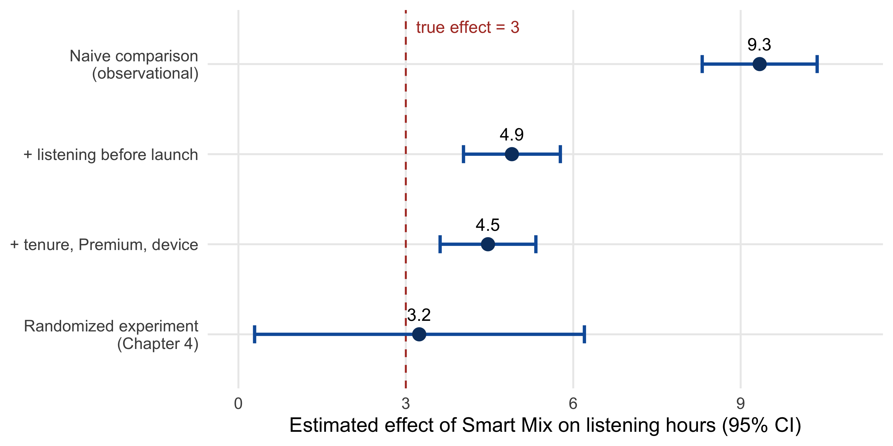
Figure 5.6 carries the central lesson of this chapter. Adjustment helped a lot: it removed about 77% of the bias of the naive comparison. But it did not remove all of it. The adjusted estimate of 4.5 hours is still above the true effect of 3 hours, and its confidence interval does not even contain it. The reason is visible in Figure 5.3: the confounder is enthusiasm, and we do not observe enthusiasm. We observe prior_hours, a proxy for it — a good proxy, but an imperfect one. Regression removes exactly the part of the confounding that our variables capture, and leaves the rest.
Two further warnings belong here:
A multiple regression does not literally compare users with identical prior listening. What it does is equivalent to a two-step procedure: first, remove from both the outcome and the treatment everything that the other predictors can explain (regress each on the other predictors and keep the residuals); then regress the residualized outcome on the residualized treatment. The coefficient from that simple regression is the multiple-regression coefficient. “Holding constant” therefore means “using only the part of the variation in the treatment that is unrelated to the other predictors”.
This also explains why correlated predictors are a problem: if two predictors move almost in lockstep, little independent variation is left for either, and both coefficients become imprecise (large standard errors). The variance inflation factor (VIF) quantifies this; car::vif(model_full) computes it, and values above about 5 deserve attention. Collinearity does not bias the coefficients — it makes them uncertain.
The model above already contains two categorical predictors, and their coefficients deserve a closer look. A 0/1 variable such as premium enters the model directly: its coefficient (2.9) is the difference in listening hours between Premium subscribers and free users, holding everything else constant.
A categorical variable with several categories, such as device with the levels iOS, Android, and Desktop, cannot be entered as a single number — the categories have no order. R handles this automatically: it chooses one category as the reference (by default the first level of the factor, here iOS) and creates a 0/1 variable — a dummy — for each of the other categories:
coef(model_full)[c("deviceAndroid", "deviceDesktop")]deviceAndroid deviceDesktop
-1.475 -2.488 Each dummy coefficient is the difference between its category and the reference category: Android users listen 1.5 hours less than iOS users, Desktop users 2.5 hours less — again holding the other variables constant. The p-values test whether each category differs from the reference, not whether the variable matters at all; for the latter, compare the model with and without the variable (anova(model_without, model_full)), which is the ANOVA of Chapter 4 in regression form.
The reference category is a matter of convenience, not of substance; the model is the same regardless of which category serves as the baseline. Choose the category that makes the comparisons you care about: smartmix_obs$device <- relevel(smartmix_obs$device, ref = "Android") makes Android the reference, so that the coefficients compare iOS and Desktop with Android. A variable stored as text ("iOS", "Android", …) is converted to a factor automatically, with the levels in alphabetical order — which is why it pays to set the levels yourself (Chapter 2).
So far we have used regression to explain: to estimate the effect of one variable while holding others constant. Regression is at least as useful for predicting — and the two uses have different rules.
Suppose the service wants to predict the listening time of users in order to plan server capacity or to target retention offers. For this predictive question (Chapter 1), it does not matter why a variable is associated with listening time, only that it is. Prior listening, tenure, Premium status, device, and Smart Mix adoption can all go into the model, confounded or not. What matters is how well the predictions hold up for new users — users the model has not seen. The standard check is to split the data: fit the model on a training set and evaluate it on a test set:
set.seed(42)
train_ids <- sample(nrow(smartmix_obs), 1500)
train <- smartmix_obs[train_ids, ]
test <- smartmix_obs[-train_ids, ]
model_pred <- lm(hours ~ prior_hours + tenure + premium + device + smart_mix, data = train)
test$predicted <- predict(model_pred, newdata = test)
sqrt(mean((test$hours - test$predicted)^2)) # typical prediction error (RMSE) in hours[1] 9.425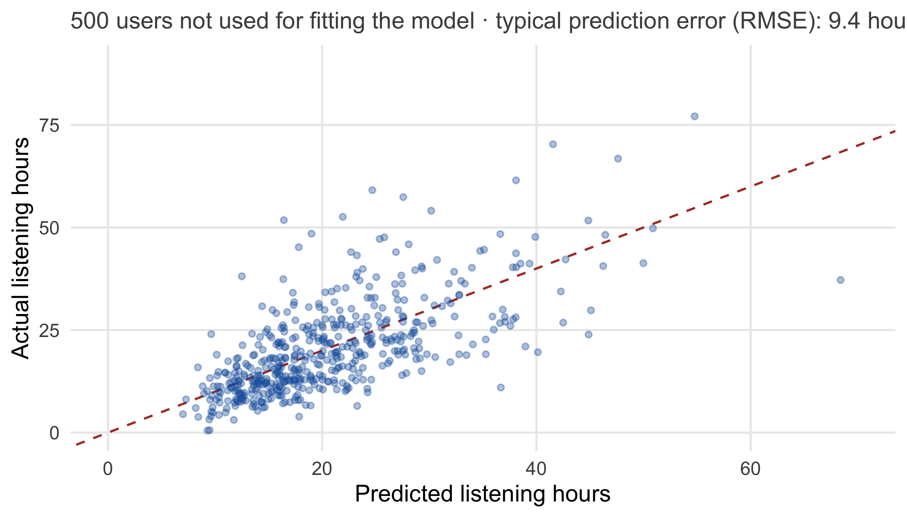
The model predicts a typical user to within about 9 hours — useful for capacity planning, even though the coefficient of smart_mix in this model is a biased estimate of its causal effect. A model can be a good predictor and a bad explainer at the same time, and vice versa.
Mixing the two — reading causal effects off a model built for prediction, or judging a causal model by its R² — is one of the most common mistakes in applied analytics.
A model with many predictors fits its training data better and better, because it learns not only the patterns but also the noise of that particular sample. Its errors on new data then get worse: this is overfitting, and it is why predictive models are judged out of sample. Within the training data, adjusted R² and information criteria such as the AIC (AIC(model)) penalize each additional predictor and help to compare models of different size — the model with the lowest AIC balances fit and parsimony. They are useful for a first comparison, but they do not replace a test set.
Regression draws straight lines, but marketing relationships are rarely straight. The second data set of this chapter contains 500 promotion campaigns for new releases at the streaming service: the promotion spend, the number of playlist placements the campaign secured, the artist’s followers, and the streams in the first four weeks.
campaigns <- read_csv("https://raw.githubusercontent.com/wu-rds/MA2026/main/data/campaigns.csv")How do streams respond to promotion spend? The left panel of Figure 5.8 shows the problem with a straight line: the first euros of promotion buy many streams, later euros fewer — diminishing returns. A straight line cannot bend; it overestimates streams for small budgets and underestimates them in the middle. The right panel shows the cure: on logarithmic scales for both axes, the cloud becomes a straight line again.
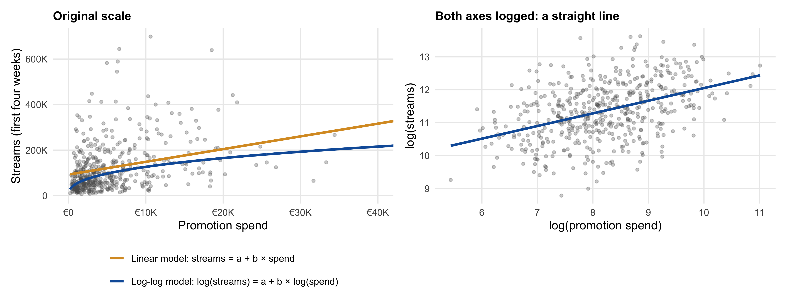
Taking logarithms of both the outcome and the predictor gives the log-log model:
\[ \log(\text{streams}) = \beta_0 + \beta_1 \log(\text{spend}) + \varepsilon \]
model_loglog <- lm(log(streams) ~ log(spend) + log(followers) + placements + genre, data = campaigns)
summary(model_loglog)
Call:
lm(formula = log(streams) ~ log(spend) + log(followers) + placements +
genre, data = campaigns)
Residuals:
Min 1Q Median 3Q Max
-1.5962 -0.2684 0.0284 0.3030 1.4799
Coefficients:
Estimate Std. Error t value Pr(>|t|)
(Intercept) 2.8815 0.2346 12.28 < 2e-16 ***
log(spend) 0.3310 0.0207 16.00 < 2e-16 ***
log(followers) 0.5071 0.0157 32.28 < 2e-16 ***
placements 0.1203 0.0119 10.07 < 2e-16 ***
genreHipHop/Rap 0.1994 0.0476 4.19 0.000033 ***
genreRock -0.2555 0.0599 -4.27 0.000023 ***
genreElectro/Dance 0.1026 0.0594 1.73 0.085 .
---
Signif. codes: 0 '***' 0.001 '**' 0.01 '*' 0.05 '.' 0.1 ' ' 1
Residual standard error: 0.44 on 493 degrees of freedom
Multiple R-squared: 0.754, Adjusted R-squared: 0.751
F-statistic: 251 on 6 and 493 DF, p-value: <2e-16The coefficient of log(spend) has a special interpretation: it is an elasticity. A 1% increase in promotion spend goes with a 0.33% increase in streams; a 10% increase with about 3.3%. The elasticity is constant along the curve — which is exactly what makes the multiplicative model fit diminishing returns: 10% more spend always buys the same percentage of additional streams, but at a high budget 10% is a lot of money for the same percentage. Elasticities are the natural language of marketing response: they do not depend on units, and they are comparable across variables, markets, and studies. The followers elasticity of 0.51, for example, says that the artist’s existing audience matters more than the promotion budget.
Logging the outcome, a predictor, both, or neither gives four model types with four interpretations (Table 5.3, Figure 5.9).
| Model | Equation | Interpretation of \(\beta_1\) |
|---|---|---|
| Level-level | \(y = \beta_0 + \beta_1 x\) | One more unit of \(x\) → \(\beta_1\) more units of \(y\) |
| Log-level | \(\log(y) = \beta_0 + \beta_1 x\) | One more unit of \(x\) → about \(100 \cdot \beta_1\)% more \(y\) (exactly: \(100 \cdot (e^{\beta_1} - 1)\)%) |
| Level-log | \(y = \beta_0 + \beta_1 \log(x)\) | 1% more \(x\) → about \(\beta_1 / 100\) more units of \(y\) |
| Log-log | \(\log(y) = \beta_0 + \beta_1 \log(x)\) | 1% more \(x\) → about \(\beta_1\)% more \(y\) (an elasticity) |
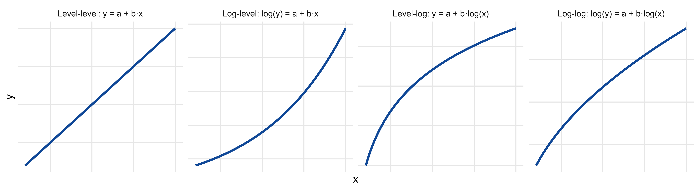
The model above contains a log-level term as well: placements enters in levels while the outcome is logged. Its coefficient of 0.12 means that each additional playlist placement goes with about 12% more streams — exactly, 12.8%. For coefficients up to about 0.1, the approximation “\(100 \cdot \beta\) percent” is good enough; for larger ones, use the exact formula. The genre dummies are read the same way: a HipHop/Rap campaign reaches about 22% more streams than a Pop campaign with the same spend, followers, and placements.
Which form to choose? Let the data and the question decide: look at the scatter plot and the residuals (Section 5.9), and ask whether the relationship is more plausibly additive (“each placement adds 10,000 streams”) or multiplicative (“each placement adds 12%”). For outcomes such as sales, streams, or revenue, which are skewed and can only be positive, the logged outcome is usually the better default.
Zeros. The logarithm of zero is not defined, so a variable with zeros (campaigns without any spend, songs without any streams) cannot be logged directly. The common fix is log(x + 1); it changes little for large values and keeps the zeros in the data. For an outcome with many zeros, better models exist (e.g., count models), but log(y + 1) is the pragmatic first step — and it is what the difference-in-differences analysis in Section 5.10 uses.
Exact vs. approximate. In a model with a logged outcome, a coefficient \(\beta\) on an unlogged predictor means that one more unit multiplies the outcome by \(e^{\beta}\). For small \(\beta\), \(e^{\beta} - 1 \approx \beta\), hence the rule “\(100 \cdot \beta\) percent”. For \(\beta\) = 0.12 the exact change is 12.7%; for \(\beta\) = 0.5 it is already 64.9%, not 50%.
Many outcomes are yes/no: did the user churn, click, buy, upgrade? The variable churn in the Smart Mix data records whether a user cancelled within three months after the launch; 16.9% did. A regression of such a 0/1 outcome on listening hours fits a straight line through a cloud of zeros and ones (Figure 5.10, orange). It can be read as a model of the probability of churn — but a straight line produces probabilities below zero for heavy listeners and would exceed one at the other end, and it cannot capture that the effect of one more hour is larger for users at risk than for users who are safe anyway.
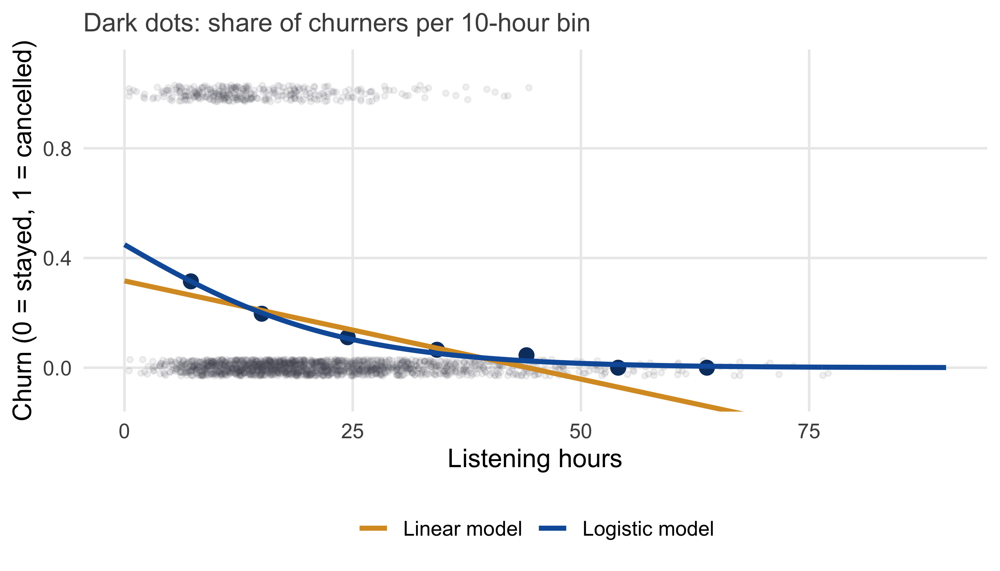
Logistic regression fixes this with an S-shaped curve that stays between 0 and 1. It models the probability of the outcome as a function of the predictors — the same predictors, the same idea of holding others constant, only a different link between the predictors and the outcome. In R, glm() with family = binomial:
model_churn <- glm(churn ~ hours + premium + tenure + smart_mix, family = binomial, data = smartmix_obs)
summary(model_churn)
Call:
glm(formula = churn ~ hours + premium + tenure + smart_mix, family = binomial,
data = smartmix_obs)
Coefficients:
Estimate Std. Error z value Pr(>|z|)
(Intercept) 0.27712 0.16136 1.72 0.08590 .
hours -0.06066 0.00851 -7.13 1e-12 ***
premium -0.53299 0.15278 -3.49 0.00049 ***
tenure -0.02045 0.00375 -5.45 5e-08 ***
smart_mix -0.25635 0.16234 -1.58 0.11432
---
Signif. codes: 0 '***' 0.001 '**' 0.01 '*' 0.05 '.' 0.1 ' ' 1
(Dispersion parameter for binomial family taken to be 1)
Null deviance: 1817.2 on 1999 degrees of freedom
Residual deviance: 1635.0 on 1995 degrees of freedom
AIC: 1645
Number of Fisher Scoring iterations: 5The coefficients are on a transformed scale (log-odds), which makes them hard to read directly. Two things can be read without any transformation: the sign (negative: the variable reduces the probability of churn) and the significance (listening hours, Premium, and tenure clearly matter; Smart Mix adoption does not, once the others are held constant). For the size of the effects, the most useful approach is to translate them into probabilities. R’s predict() does this for any combination of predictor values:
typical_user <- data.frame(hours = c(10, 20, 30), premium = 0, tenure = 24, smart_mix = 0)
predict(model_churn, newdata = typical_user, type = "response") 1 2 3
0.3057 0.1936 0.1157 A free user with two years of tenure who listens 10 hours a month has a churn probability of about 31%; at 30 hours, it falls to about 12%. Differences between such predicted probabilities are effects in percentage points, the unit managers understand. A convenient summary is the average effect of a variable across all users — for example, of Premium status:
p_free <- predict(model_churn, newdata = mutate(smartmix_obs, premium = 0), type = "response")
p_premium <- predict(model_churn, newdata = mutate(smartmix_obs, premium = 1), type = "response")
mean(p_premium - p_free)[1] -0.06477Premium subscribers are about 6.5 percentage points less likely to churn than otherwise identical free users. (Whether this is a causal effect of the subscription is, of course, the same question as in Section 5.4.)
Logistic regression models the log-odds of the outcome as a linear function of the predictors: \(\log\frac{p}{1-p} = \beta_0 + \beta_1 x_1 + \dots\). The odds \(p / (1-p)\) compare the probability of the event with the probability of the non-event (a probability of 0.2 corresponds to odds of 0.25, or “1 to 4”); the logarithm stretches them over the whole number line, so that a linear function can never produce impossible probabilities. The S-shaped curve in Figure 5.10 is the inverse of this transformation.
Exponentiating a coefficient gives an odds ratio: exp(coef(model_churn)). An odds ratio of 0.59 for Premium means that the odds of churning are 41% lower for Premium subscribers. Odds ratios are common in research reports, but they are easily misread as ratios of probabilities (they are not, unless the event is rare). For communication, predicted probabilities and percentage-point differences are usually the better choice.
Textbooks list many assumptions of the linear model, and R can produce a whole battery of diagnostic plots and tests. Three checks are worth doing every time, because each can change a conclusion.
1. Is the straight line the right shape? Plot the residuals against the fitted values (Figure 5.11). If the residuals show a pattern — a curve, a U-shape — the model misses something systematic, and a different functional form (Section 5.7) or an additional predictor is needed. For the campaign data, the linear model leaves a clear curve in the residuals; the log-log model does not.
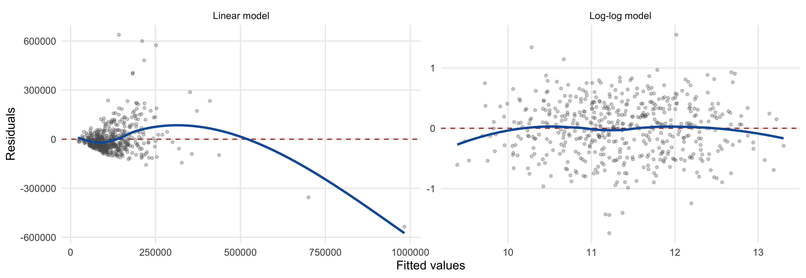
plot(model_loglog, which = 1) # residuals vs. fitted, with a smooth line2. Does a handful of observations drive the result? A single extreme observation can tilt a regression line (Figure 5.12). Such influential observations are often data errors (Chapter 2) or genuinely different cases (one campaign with a viral hit). Look for them with plot(model, which = 5), and refit the model without them: if the conclusion changes, say so.
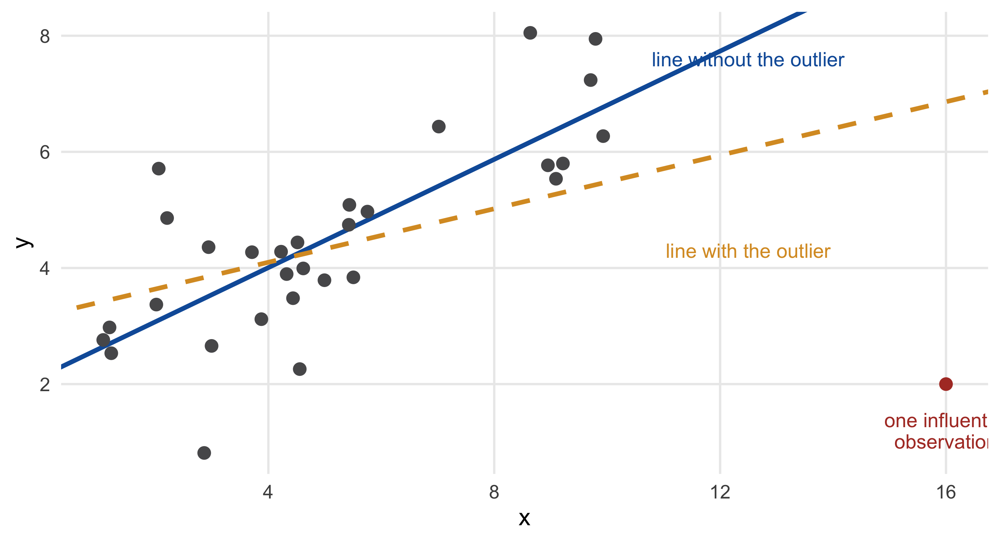
3. Is the uncertainty right? The standard errors of lm() assume that the residuals scatter equally at all levels of the prediction. When the scatter grows with the fitted values — a funnel in the residual plot (Figure 5.13), common for sales and revenues — the coefficients remain unbiased, but their standard errors, and hence the p-values and confidence intervals, are wrong. The fix is cheap: robust standard errors, which do not rely on this assumption:
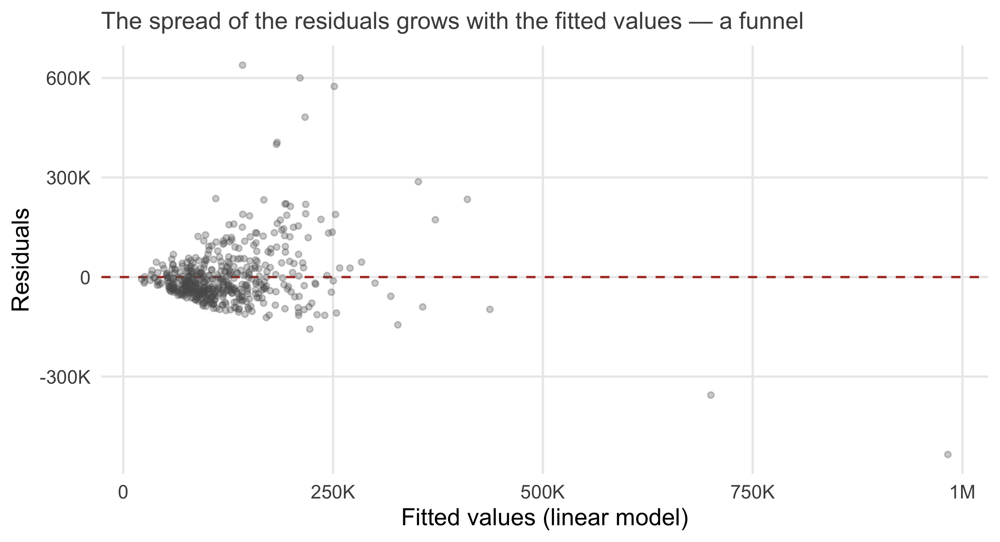
library(sandwich)
library(lmtest)
model_linear <- lm(streams ~ spend + followers + placements, data = campaigns)
coeftest(model_linear, vcov = vcovHC(model_linear, type = "HC1"))
t test of coefficients:
Estimate Std. Error t value Pr(>|t|)
(Intercept) 14779.4333 11620.8620 1.27 0.20404
spend 5.4337 0.6869 7.91 1.7e-14 ***
followers 0.3408 0.0985 3.46 0.00058 ***
placements 16299.9818 2934.3428 5.55 4.5e-08 ***
---
Signif. codes: 0 '***' 0.001 '**' 0.01 '*' 0.05 '.' 0.1 ' ' 1Often, the funnel disappears when the outcome is logged — another reason why the log-log model is the better default for skewed outcomes.
Influence is measured by Cook’s distance, which combines how far an observation lies from the others in the predictors with how badly the model fits it: cooks.distance(model); values far above the others (a common rule: above 4/n, or above 1) deserve a look. Heteroskedasticity can be tested formally with the Breusch–Pagan test, lmtest::bptest(model), but the robust standard errors are the practical answer either way — many analysts use them by default.
Two classic diagnostics are not on the list above. Normality of the residuals matters little with the sample sizes of this course, thanks to the central limit theorem (Chapter 3); a Q-Q plot (plot(model, which = 2)) is worth a glance for extreme outliers, not for its own sake. And multicollinearity affects the precision of coefficients, not their validity (Section 5.4); it is a problem only when the coefficients of the correlated variables are what you need.
Adjustment handles confounders you can measure. A second strategy for observational data uses time: if we observe the same units before and after an intervention, and a comparison group that did not receive it, we can net out everything that stays constant within units and everything that changes for everyone. This is the difference-in-differences (DiD) logic you met in Chapter 1 with the Spotify study. Here we apply it to real data.
The question: what does a listing on a major Spotify playlist do to a song’s streams? The data contain weekly streams of 290 songs over 21 weeks. In the week of March 19, 2018, 53 of them were added to a large playlist (the treated songs); the other 237 were not (the control songs). The data are real, from a research project at WU.
playlist <- read_csv("https://raw.githubusercontent.com/wu-rds/MA2026/main/data/playlist_did.csv")| Variable | Description |
|---|---|
song_id, week |
One row per song and week (21 weeks: 10 before, the listing week, 10 after) |
streams |
Weekly streams of the song |
treated |
1 for songs added to the playlist, 0 for control songs |
post |
1 for weeks after the listing, 0 for weeks before |
genre, major_label, playlist_followers |
Song and artist characteristics |
Figure 5.14 shows the average (log) streams of both groups over time. Three things stand out. First, the playlisted songs start at a higher level — they are not a random sample of songs, so a simple comparison of levels would be misleading. Second, before the listing, both groups move in parallel: whatever drives weekly streams (seasonality, platform-wide trends) affects both groups alike. Third, at the listing, the treated group jumps.
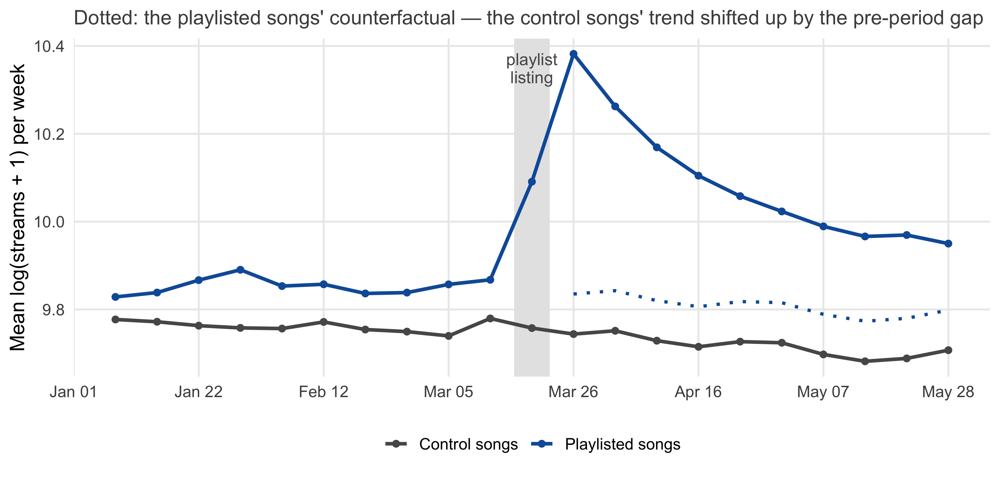
The DiD estimate uses four numbers: the mean outcome of each group before and after the intervention (Figure 5.15). The first difference — after minus before — captures the change in each group; the difference between these differences is the effect, because the control group’s change estimates what would have happened to the treated songs without the listing:
\[ \text{DiD} = (\bar{y}_{\text{treated, after}} - \bar{y}_{\text{treated, before}}) - (\bar{y}_{\text{control, after}} - \bar{y}_{\text{control, before}}) \]
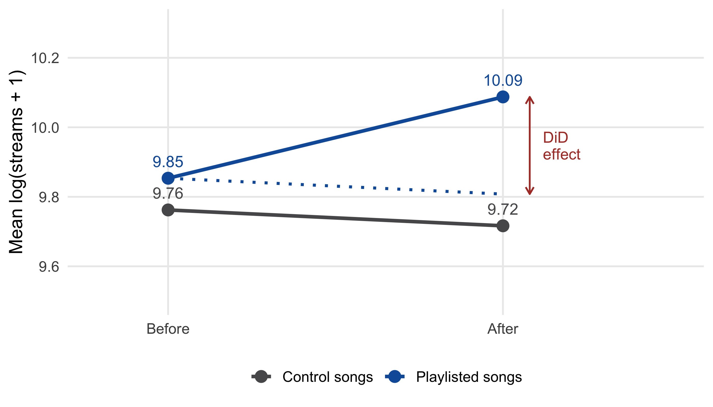
did_data <- playlist |>
filter(week != as.Date("2018-03-19")) |> # drop the listing week itself
mutate(log_streams = log(streams + 1))
did_data |>
group_by(treated, post) |>
summarise(mean_log_streams = mean(log_streams), .groups = "drop")# A tibble: 4 × 3
treated post mean_log_streams
<dbl> <dbl> <dbl>
1 0 0 9.76
2 0 1 9.72
3 1 0 9.85
4 1 1 10.1 By hand: (10.09 − 9.85) − (9.72 − 9.76) = 0.28 log points.
The same estimate comes out of a regression with three terms — the treatment group dummy, the post-period dummy, and their product:
\[ \log(\text{streams}) = \beta_0 + \beta_1 \, \text{treated} + \beta_2 \, \text{post} + \beta_3 \, (\text{treated} \times \text{post}) + \varepsilon \]
model_did <- lm(log_streams ~ treated * post, data = did_data)
summary(model_did)
Call:
lm(formula = log_streams ~ treated * post, data = did_data)
Residuals:
Min 1Q Median 3Q Max
-6.207 -0.463 -0.025 0.572 3.601
Coefficients:
Estimate Std. Error t value Pr(>|t|)
(Intercept) 9.7622 0.0179 545.86 < 2e-16 ***
treated 0.0913 0.0418 2.18 0.029 *
post -0.0456 0.0253 -1.80 0.071 .
treated:post 0.2796 0.0592 4.73 0.0000023 ***
---
Signif. codes: 0 '***' 0.001 '**' 0.01 '*' 0.05 '.' 0.1 ' ' 1
Residual standard error: 0.871 on 5796 degrees of freedom
Multiple R-squared: 0.0142, Adjusted R-squared: 0.0137
F-statistic: 27.8 on 3 and 5796 DF, p-value: <2e-16In R, treated * post is shorthand for treated + post + treated:post. Each coefficient has a clear meaning (Table 5.5), and the one we care about is the interaction treated:post: 0.28 log points, i.e., the playlist listing increased weekly streams by about 32% — exactly the by-hand estimate, now with a standard error and a confidence interval (0.16 to 0.4).
| Coefficient | Value | Meaning |
|---|---|---|
(Intercept) |
9.76 | Control songs, before: the baseline level |
treated |
0.09 | Treated songs, before: how much higher they already were — the level difference between the groups |
post |
-0.05 | Control songs, after minus before: the common time trend |
treated:post |
0.28 | The extra change of the treated songs — the DiD effect |
The regression form has two advantages over the four means: it gives the uncertainty, and it extends naturally — control variables, several periods, or several treatment groups can be added. (The interaction term that does the work here is the subject of Chapter 6, where it appears in its general role.)
The DiD estimate is causal only if, without the listing, the treated songs would have followed the same trend as the control songs — the parallel trends assumption. It cannot be tested directly, because we never observe the treated songs without the listing. But the pre-period offers a check: if the two groups moved in parallel before the listing, it is plausible that they would have continued to do so. In Figure 5.14, they did. A formal version is a placebo test: pretend the listing happened earlier, in the pre-period, and check that the “effect” is zero:
placebo_data <- did_data |>
filter(post == 0) |> # pre-period only
mutate(fake_post = ifelse(week >= as.Date("2018-02-12"), 1, 0))
coef_table(lm(log_streams ~ treated * fake_post, data = placebo_data))["treated:fake_post", ] Estimate Std. Error t value p-value
treated:fake_post 0.002 0.085 0.03 0.978The placebo effect is close to zero and not significant — the pre-trends are parallel. Had the treated songs been on a rising trend before the listing (say, because they were already becoming hits, which is why the playlist editors picked them), the DiD would attribute that trend to the listing.
The simple regression above treats the two groups and the two periods as homogeneous. Two extensions are standard in practice. Control variables (genre, label, playlist followers) can be added to the regression to improve precision — they do not change the logic. Fixed effects for songs and weeks (lm(log_streams ~ treated:post + factor(song_id) + factor(week)), or the fixest package) replace the treated and post dummies by one dummy per song and per week, which absorbs any song-specific level and any week-specific shock; with many songs and weeks, this is the usual specification. In addition, the standard errors should account for the fact that the weekly observations of the same song are not independent (clustered standard errors). Finally, when treatment happens at different times for different units, the simple DiD can be misleading; modern estimators (e.g., the did package based on Callaway and Sant’Anna (2021)) handle such staggered designs. For the two-group, one-date case here, the simple regression is enough.
This chapter equipped you with two strategies for causal questions without randomization, and with a tool that is useful regardless of causality. (For a deeper, still readable treatment of these strategies, Angrist and Pischke (2009) remains the standard reference.)
Whichever strategy you use, report it the way Chapter 4 taught: the effect, its uncertainty, and — for observational data — the assumptions it rests on. “Adjusting for prior listening, tenure, Premium status, and device, adopters listen about 4.5 hours more (95% CI 3.6 to 5.3). This estimate assumes that no further differences between adopters and non-adopters affect listening — an assumption that the experiment in Chapter 4, which found 3.2 hours, suggests is not fully met.”
The regression toolkit has one more use, which the next chapter develops: it can tell us for whom an effect is larger (moderation, through interaction terms like the one in the DiD regression) and through which mechanism it works (mediation). That is the subject of Chapter 6.
(LC5.1) In a regression of listening hours on prior listening hours, the slope is 0.83. Interpret the coefficient in one sentence — and explain why it does not show that listening before the launch causes listening after it.
(LC5.2) Which statements about adjustment in multiple regression are correct?
(LC5.3) A model contains the categorical variable plan with the levels “Free”, “Premium”, and “Family” (reference: Free). The coefficient of planFamily is 4.2. Interpret it. How would you test whether the plan matters at all?
(LC5.4) A colleague fits a regression with 25 predictors to 300 customers and reports R² = 0.71 for predicting next month’s spending. What should you ask before trusting this number?
(LC5.5) In a log-log regression, the coefficient of log(advertising spend) is 0.15. (a) Interpret it. (b) The same analysis in levels gives a coefficient of 0.8 sales per euro. Why might the two models reach different conclusions about whether to double the budget?
(LC5.6) In a log-level model with the outcome log(sales), the coefficient of a dummy for “promotion week” is 0.35. By what percentage do sales differ in promotion weeks? Use both the approximate and the exact interpretation.
(LC5.7) Which statements about logistic regression are correct?
(LC5.8) An analyst reports a difference-in-differences estimate of a price promotion on sales in treated stores. Which statements are correct?
(LC5.9) The residual plot of a regression of revenue on advertising shows a funnel: the residuals scatter more widely for large fitted values. What does this mean for the coefficients and for the p-values — and what is the simplest fix?
(LC5.10) Your group project experiment randomizes two versions of a product description. Afterwards, you also want to know whether the effect differs between frequent and occasional buyers. Which tool from this chapter do you need — and in which chapter is it developed?